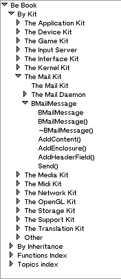

|  | All the indexes are organised in a tree. As an example, here are some parts of the tree created by the BeBook add-on, on the left.
All the elements of the tree are called HappyLinks. Each HappyLink has a name, a link to an html file, and a few other things I'll describe later. The first HappyLink of the list has the name of the documentation, and points to its main html file (usually index.html). This link has some children (here 'By Kit', 'By Inheritance', 'Functions Index' and 'Topics Index'), and each child will be interpreted as an index for BeHappy (ie they will be in the popup menu). They also point on the main html file. The grandchildren (such as the different kits) and their offspring will be put in the lists BeHappy displays under the popup menu. |